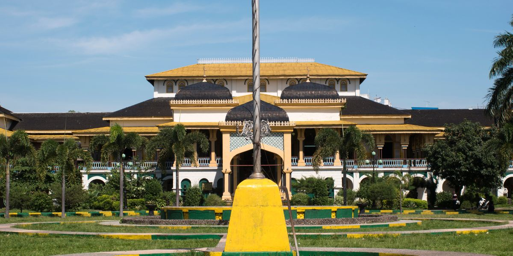
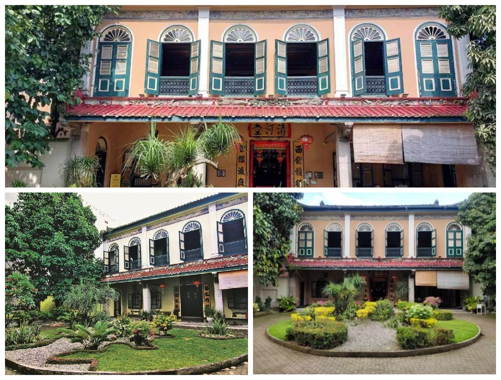
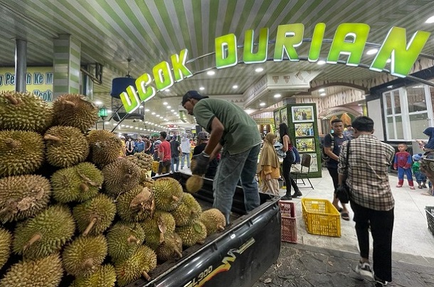
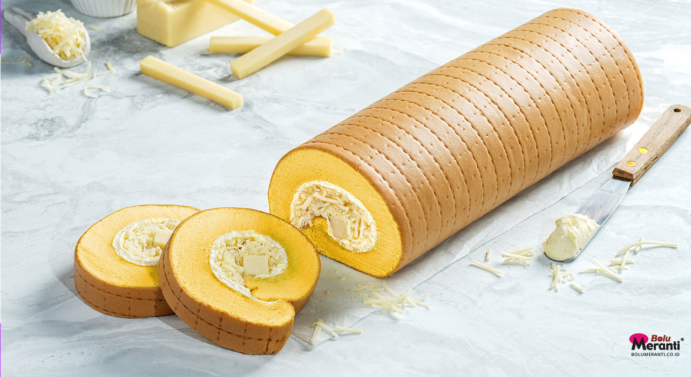
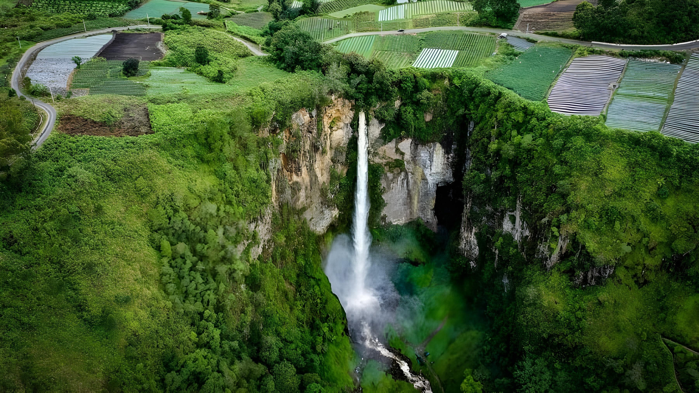

Sejarah
Kota Medan merupakan salah satu destinasi wisata utama di Sumatera Utara yang menawarkan perpaduan budaya dan sejarah.
Bangunan bersejarah seperti Istana Maimun dan Museum Tjong A Fie menjadi daya tarik bagi wisatawan yang ingin mengenal lebih dekat sejarah perkembangan Kota Medan.
Istana Maimun

Istana Maimun Medan merupakan salah satu ikon wisata paling terkenal di Kota Medan, Sumatera Utara.
Bangunan bersejarah ini menjadi simbol kejayaan Kesultanan Deli sekaligus daya tarik utama bagi wisatawan yang ingin mengenal sejarah dan budaya Melayu di wilayah tersebut.
Arsitektur istana yang megah dengan perpaduan berbagai gaya budaya menjadikannya salah satu destinasi wisata sejarah yang paling menarik di Indonesia.
Waktu Operasional: Senin-Minggu sekitar pukul 08.00-17.00 WIB
Harga tiket:
- Wisatawan domestik: Rp 10.000
- Wisatawan mancanegara: Rp 20.000
Museum Tjong A Fie

Museum Tjong A Fie adalah sebuah bangunan bersejarah yang terletak di Jalan Ahmad Yani, Medan, Sumatera Utara. Dibangun pada tahun 1900 oleh seorang saudagar kaya bernama Tjong A Fie, rumah ini kini menjadi salah satu destinasi wisata populer di Medan.
Museum memiliki arsitektur campuran antara gaya Tionghoa, Melayu, dan Eropa. Fasad bangunan yang berwarna merah menyala dengan hiasan-hiasan khas Tionghoa yang rumit menjadi daya tarik utama.
Di bangunan ini Anda dapat melihat foto-foto keluarga, perabotan antik, dan artefak lain yang menggambarkan kehidupan keluarga Tjong A Fie pada masa lalu.
Waktu Operasional: Senin-Minggu sekitar pukul 09.00-17.00 WIB
Harga tiket:
- Umum: Rp 35.000
- Pelajar: Rp 20.000
Kuliner
Medan dikenal sebagai salah satu surga kuliner di Indonesia yang menawarkan beragam makanan khas dengan cita rasa yang kaya dan unik.
Mulai dari makanan berat, camilan, hingga oleh-oleh legendaris, setiap hidangan mencerminkan keberagaman budaya yang ada di kota ini.
Tak heran jika wisata kuliner menjadi salah satu alasan utama wisatawan berkunjung ke Medan.
Ucok Durian

Ucok Durian Medan adalah ikon kuliner kebanggaan kota Medan. Tempat ini sudah jadi top of mind sejak 1985 dan bahkan ada ungkapan, “Jangan bilang pernah ke Medan kalau belum mampir ke Ucok Durian.”
Pilihan duriannya banyak, montok, manis, dan yang paling penting bisa ditukar kalau rasanya kurang pas. Selain durian, ada juga pancake durian, jambu potong, sampai aneka minuman seperti teh, kopi, dan jus.
Lokasi: Jl. K.H. Wahid Hasyim No.30-32, Babura, Kec. Medan Baru, Kota Medan
Harga: Rp 10.000 - Rp 180.000
Bolu Meranti

Bolu Meranti telah menjadi simbol oleh-oleh Medan yang tak lekang oleh waktu.
Tidak hanya dikenal oleh wisatawan lokal, tetapi juga oleh pelancong mancanegara yang penasaran dengan rasa lembut dan legit dari bolu gulung ikonik ini.
Cita rasanya yang autentik, teksturnya yang lembut, serta berbagai pilihan rasa menjadikan Bolu Meranti sebagai buah tangan istimewa dari kota Medan.
Kepopuleran Bolu Meranti pun bukan sekadar tren musiman, melainkan hasil dari konsistensi kualitas dan loyalitas pelanggan selama bertahun-tahun.
Lokasi:
- Pusat: Jl. Kruing simpang Razak No. 7C
- Cabang: Jl. Sisingamangaraja No. 19B
- Cabang: Komplek OCBC, Jl. Gagak Hitam No. 16
Harga: Rp 110.000 - Rp 170.000/kotak
Wisata Alam
Medan, ibu kota Provinsi Sumatera Utara, adalah sebuah kota yang kaya akan keindahan alam dan warisan budaya yang menawan.
Dengan pesona alamnya yang memukau dan keragaman budayanya yang kaya, Medan menjadi tujuan wisata yang menarik bagi para pengunjung dari dalam dan luar negeri.
Danau Toba
Danau Toba adalah salah satu tempat wisata yang wajib dikunjungi saat berada di Medan, kota terbesar di Sumatera Utara, Indonesia. Terletak sekitar 4-5 jam perjalanan dari Medan, Danau Toba menawarkan pengalaman yang menakjubkan dalam menjelajahi keindahan alam yang spektakuler.
Air Terjun Sipisopiso

Air Terjun Sipisopiso atau Sipiso-piso adalah sebuah air terjun yang berada di Desa Tongging, Kecamatan Merek, Kabupaten Karo, Provinsi Sumatera Utara, Indonesia.
Air Terjun Sipisopiso memiliki ketinggian hingga 120 meter dan mengucur deras membentuk garis vertikal sempurna.
Air Terjun Sipiso-piso dianugerahi pemandangan alam yang mengesankan. Meski harus bersusah payah melintasi tangga, namun di sepanjang perjalanan kamu bisa menikmati pemandangan perkebunan yang ada di dekat tebing.
Sementara di samping kanan dan kiri air terjun juga dipenuhi oleh pepohonan sehingga suasananya terasa sangat menyegarkan.